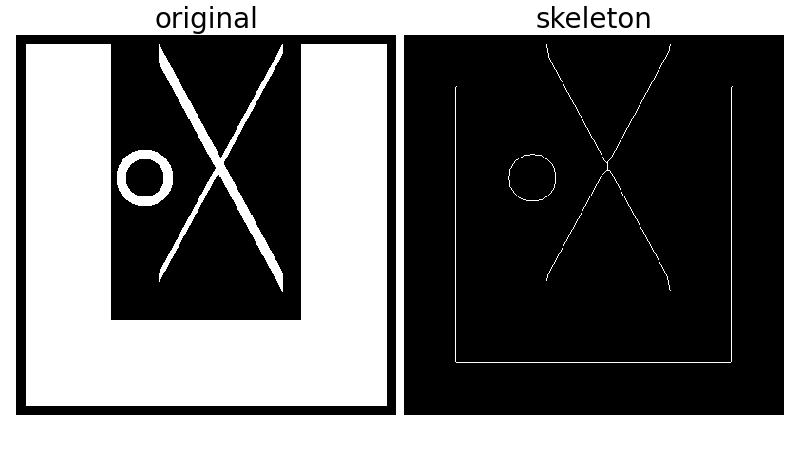

Skeletonization reduces binary objects to 1 pixel wide representations. This can be useful for feature extraction, and/or representing an object’s topology.
The algorithm works by making successive passes of the image. On each pass, border pixels are identified and removed on the condition that they do not break the connectivity of the corresponding object.
This module provides an example of calling the routine and displaying the results. The input is a 2D ndarray, with either boolean or integer elements. In the case of boolean, ‘True’ indicates foreground, and for integer arrays, the foreground is 1’s.
from skimage.morphology import skeletonize
from skimage import draw
import numpy as np
import matplotlib.pyplot as plt
# an empty image
image = np.zeros((400, 400))
# foreground object 1
image[10:-10, 10:100] = 1
image[-100:-10, 10:-10] = 1
image[10:-10, -100:-10] = 1
# foreground object 2
rs, cs = draw.line(250, 150, 10, 280)
for i in range(10):
image[rs + i, cs] = 1
rs, cs = draw.line(10, 150, 250, 280)
for i in range(20):
image[rs + i, cs] = 1
# foreground object 3
ir, ic = np.indices(image.shape)
circle1 = (ic - 135)**2 + (ir - 150)**2 < 30**2
circle2 = (ic - 135)**2 + (ir - 150)**2 < 20**2
image[circle1] = 1
image[circle2] = 0
# perform skeletonization
skeleton = skeletonize(image)
# display results
plt.figure(figsize=(8, 4.5))
plt.subplot(121)
plt.imshow(image, cmap=plt.cm.gray)
plt.axis('off')
plt.title('original', fontsize=20)
plt.subplot(122)
plt.imshow(skeleton, cmap=plt.cm.gray)
plt.axis('off')
plt.title('skeleton', fontsize=20)
plt.subplots_adjust(wspace=0.02, hspace=0.02, top=0.98,
bottom=0.02, left=0.02, right=0.98)
plt.show()
Python source code: download (generated using skimage 0.9.0)